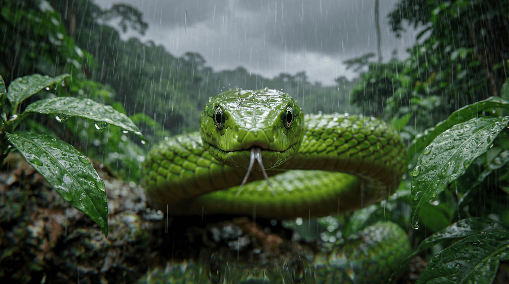
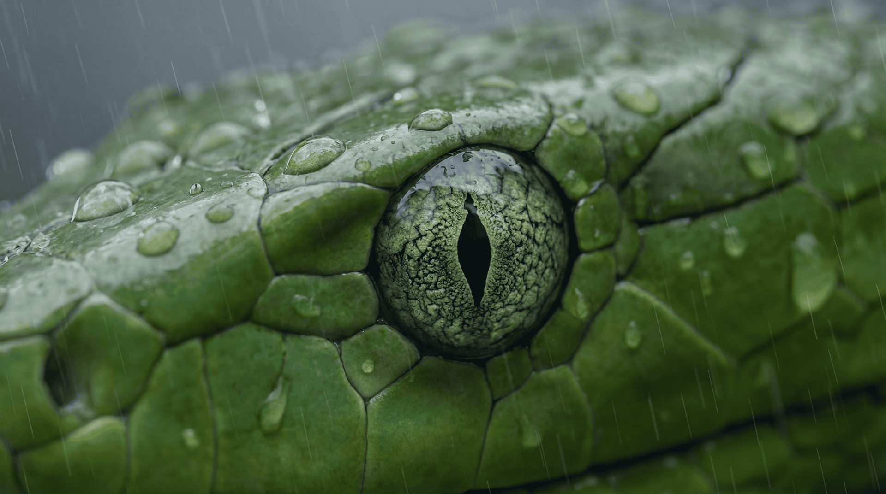
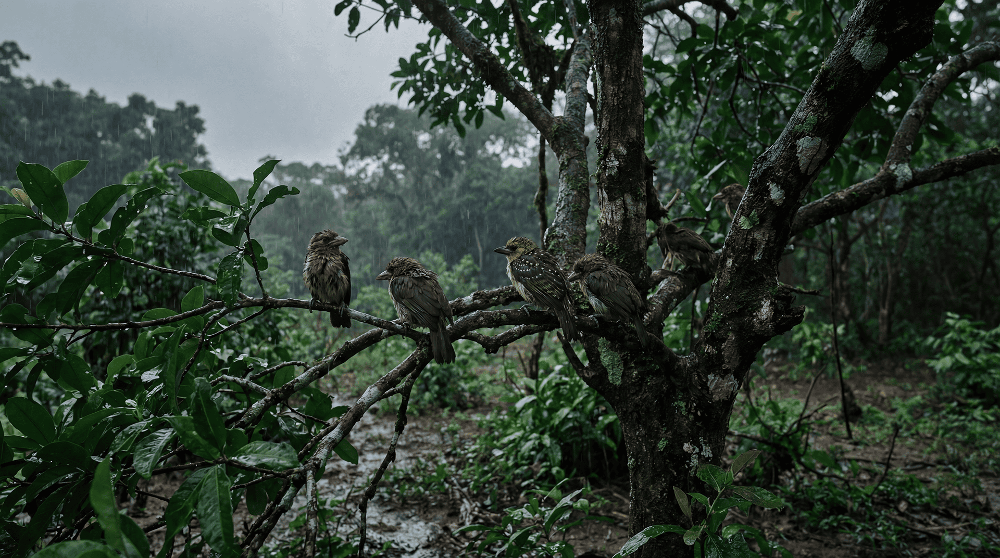
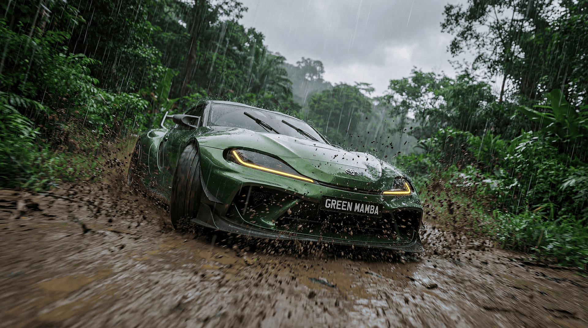
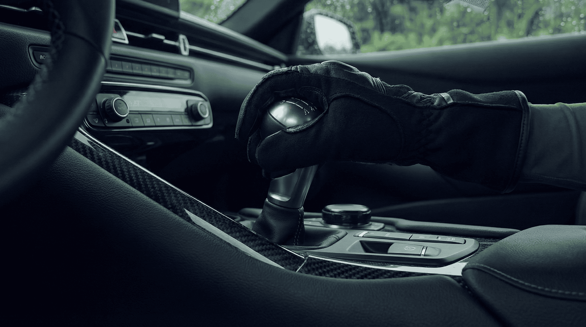
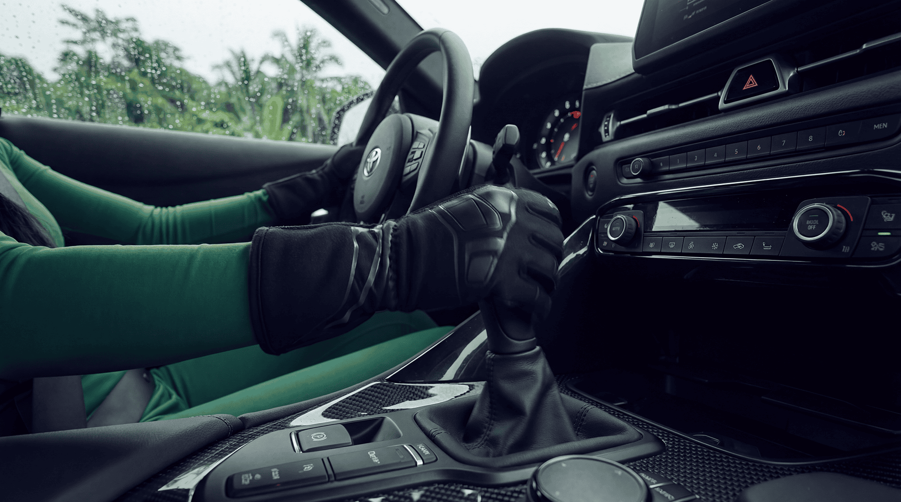
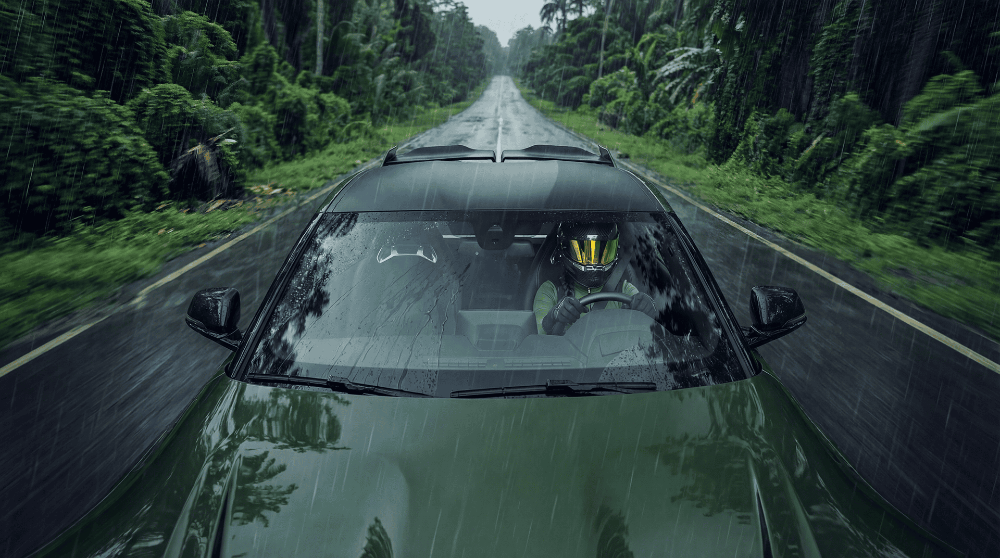

ИИ-контент · Полностью нейросеть · 2026
TOYOTA Supra GR 2026
TOYOTA Supra GR 2026
GREEN MAMBA
Полностью ИИ-сгенерированный ролик — ни одного реального кадра. Машина, джунгли, дождь, молнии и змея созданы нейросетями с нуля.
Задача
Показать характер Toyota GR Supra GREEN MAMBA без реальной съёмки — только через образ. Агрессия, скорость, дождь, джунгли. Зелёная мамба как альтер-эго машины.
Что сделали
Создали полностью ИИ-сгенерированный ролик — каждый кадр придуман и сделан нейросетью. Ни одной реальной фотографии или съёмки. Арт-дирекшен, раскадровка и итоговый монтаж — наши.
Видео
GREEN MAMBA в движении
AI-визуалы
Кадры проекта













Сделаем ролик без съёмки — только нейросеть
Любой продукт, любой образ, любая локация — без камеры и съёмочной группы. Расскажите идею — воплотим.